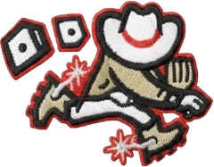

ABL · RP
Pete Harnisch
- Team
- Las Vegas Gamblers
- Position
- RP
- Bats/Throws
- S/R
- Height/Weight
- 6'1", 194 lb
- Born
- Sep 23, 1966 in Commack, NY
- Age
- 35
- Uniform
- #6
- Salary
- $244,000
2002 pitching
| Team | Lg | G | GS | W | L | SV | IP | H | R | ER | BB | K | HR | ERA | WHIP | HLD | BS | QS | CG | SHO |
|---|---|---|---|---|---|---|---|---|---|---|---|---|---|---|---|---|---|---|---|---|
| BGSKY | Low Minors | 1 | 1 | 0 | 1 | 0 | 8.1 | 10 | 7 | 6 | 0 | 4 | 2 | 6.48 | 1.20 | 0 | 0 | 0 | 0 | 0 |
| LVG | ABL | 14 | 0 | 1 | 1 | 0 | 28.0 | 44 | 25 | 21 | 10 | 30 | 8 | 6.75 | 1.93 | 1 | 1 | 0 | 0 | 0 |
2002 pitching, advanced
| Team | Lg | BF | Pit | Pit/IP | Opp AVG | BABIP | HBP | WP | IR | IR scored | K/9 | BB/9 | HR/9 | K% | BB% | K-BB% | FIP | ERA+ | GB% | WPA | WAR |
|---|---|---|---|---|---|---|---|---|---|---|---|---|---|---|---|---|---|---|---|---|---|
| BGSKY | Low Minors | 36 | 102 | 12.2 | .286 | .276 | 0 | 0 | 0 | - | 4.3 | 0.0 | 2.2 | 11.1% | 0.0% | 11.1% | 5.64 | 66 | 52.6% | -0.27 | 0.0 |
| LVG | ABL | 139 | 531 | 19.0 | .349 | .400 | 0 | 5 | 13 | 7 (53.8%) | 9.6 | 3.2 | 2.6 | 21.6% | 7.2% | 14.4% | 6.32 | 76 | 48.1% | -1.58 | -0.3 |
2002 batting
| Team | Lg | G | PA | AB | R | H | 2B | 3B | HR | RBI | BB | K | SB | AVG | OBP | SLG | OPS |
|---|---|---|---|---|---|---|---|---|---|---|---|---|---|---|---|---|---|
| BGSKY | Low Minors | 1 | 3 | 3 | 1 | 1 | 1 | 0 | 0 | 0 | 0 | 0 | 0 | .333 | .333 | .667 | 1.000 |
2002 batting, advanced
| Team | Lg | PA | Pit/PA | SH | SF | HBP | IBB | GIDP | CS | OPS+ | ISO | BABIP | BB% | K% | WPA | UBR | WAR |
|---|---|---|---|---|---|---|---|---|---|---|---|---|---|---|---|---|---|
| BGSKY | Low Minors | 3 | 3.33 | 0 | 0 | 0 | 0 | 0 | 0 | 148 | .333 | .333 | 0.0% | 0.0% | -0.02 | -0.6 | 0.0 |
Pitching splits
| Split | G | GS | W | L | SV | IP | H | R | ER | BB | K | HR | ERA | WHIP | Opp AVG | K/9 | BB/9 | HR/9 | FIP |
|---|---|---|---|---|---|---|---|---|---|---|---|---|---|---|---|---|---|---|---|
| Home | 6 | 1 | 0 | 1 | 0 | 22.2 | 34 | 19 | 17 | 1 | 20 | 5 | 6.75 | 1.54 | .340 | 7.9 | 0.4 | 2.0 | 4.91 |
| Road | 9 | 0 | 1 | 1 | 0 | 13.2 | 20 | 13 | 10 | 9 | 14 | 5 | 6.59 | 2.12 | .328 | 9.2 | 5.9 | 3.3 | 8.36 |
By month
| Month | G | GS | W | L | SV | IP | H | R | ER | BB | K | HR | ERA | WHIP | Opp AVG | K/9 | BB/9 | HR/9 | FIP |
|---|---|---|---|---|---|---|---|---|---|---|---|---|---|---|---|---|---|---|---|
| April | 11 | 1 | 1 | 1 | 0 | 28.0 | 37 | 21 | 19 | 6 | 25 | 6 | 6.11 | 1.54 | .311 | 8.0 | 1.9 | 1.9 | 5.32 |
| May | 4 | 0 | 0 | 1 | 0 | 8.1 | 17 | 11 | 8 | 4 | 9 | 4 | 8.64 | 2.52 | .405 | 9.7 | 4.3 | 4.3 | 9.20 |
vs left- and right-handed batters
| Split | BF | AB | H | HR | BB | K | Opp AVG | Opp OBP | Opp SLG | K% | BB% |
|---|---|---|---|---|---|---|---|---|---|---|---|
| vs LHB | 69 | 59 | 21 | 4 | 8 | 14 | .356 | .426 | .695 | 20.3% | 11.6% |
| vs RHB | 106 | 102 | 33 | 6 | 2 | 20 | .324 | .333 | .578 | 18.9% | 1.9% |
Opponents by situation
| Situation | PA | AB | H | 2B | 3B | HR | RBI | BB | K | AVG | OBP | SLG | OPS |
|---|---|---|---|---|---|---|---|---|---|---|---|---|---|
| Bases empty | 86 | 84 | 23 | 3 | 1 | 4 | 4 | 2 | 19 | .274 | .291 | .476 | .767 |
| Runners on | 89 | 77 | 31 | 7 | 2 | 6 | 29 | 8 | 15 | .403 | .448 | .779 | 1.227 |
| Runners in scoring position | 67 | 56 | 19 | 3 | 0 | 4 | 23 | 7 | 11 | .339 | .400 | .607 | 1.007 |
| RISP, two outs | 31 | 28 | 10 | 0 | 0 | 4 | 13 | 3 | 4 | .357 | .419 | .786 | 1.205 |
| Innings 1-3 | 16 | 13 | 3 | 0 | 0 | 0 | 2 | 1 | 3 | .231 | .267 | .231 | .497 |
| Innings 4-6 | 54 | 53 | 17 | 4 | 1 | 3 | 13 | 1 | 11 | .321 | .333 | .604 | .937 |
| Innings 7-9 | 105 | 95 | 34 | 6 | 2 | 7 | 18 | 8 | 20 | .358 | .404 | .684 | 1.088 |
Situational splits are rebuilt from every plate appearance in the export (base/out state when the PA began). "RBI" counts runs batted in on that PA.
2002 pitching game log
| Date | Opp | Score | Dec | IP | H | R | ER | BB | K | HR | BF | PC | GB | FB | QS | WPA | |
|---|---|---|---|---|---|---|---|---|---|---|---|---|---|---|---|---|---|
| May 12 | @MEXC | L 2-3 | L,BS | 1.1 | 3 | 2 | 2 | 2 | 0 | 1 | 9 | 38 | 4 | 0 | -0.408 | ||
| May 10 | vsCLE | L 4-14 | 3.2 | 8 | 4 | 4 | 0 | 4 | 1 | 18 | 63 | 0 | 6 | -0.004 | |||
| May 5 | @PoBe | L 2-6 | 2.0 | 2 | 0 | 0 | 2 | 5 | 0 | 11 | 54 | 1 | 0 | -0.039 | |||
| May 4 | @PoBe | L 8-16 | 1.1 | 4 | 5 | 2 | 0 | 0 | 2 | 9 | 22 | 2 | 2 | -0.443 | |||
| Apr 30 | @PIT | L 2-6 | 3.0 | 2 | 1 | 1 | 0 | 4 | 1 | 11 | 37 | 5 | 0 | -0.002 | |||
| Apr 26 | vsMIN | L 9-14 | 3.1 | 5 | 1 | 1 | 1 | 4 | 0 | 15 | 69 | 2 | 3 | -0.173 | |||
| Apr 21 | @NYK | W 4-3 | H | 1.2 | 3 | 2 | 2 | 1 | 1 | 0 | 9 | 29 | 2 | 2 | -0.052 | ||
| Apr 19 | @TBR | W 4-1 | 0.1 | 1 | 0 | 0 | 0 | 0 | 0 | 2 | 8 | 1 | 0 | 0.010 | |||
| Apr 17 | vsSJC | L 1-8 | 2.0 | 5 | 4 | 3 | 0 | 2 | 1 | 12 | 43 | 3 | 1 | -0.246 | |||
| Apr 14 | @SBS | W 4-3 | W | 1.1 | 3 | 1 | 1 | 0 | 2 | 0 | 7 | 28 | 0 | 2 | -0.081 | ||
| Apr 12 | @SBS | L 5-8 | 1.2 | 2 | 2 | 2 | 3 | 0 | 1 | 10 | 40 | 3 | 2 | -0.165 | |||
| Apr 9 | vsNOLA | W 6-5 | 2.2 | 2 | 0 | 0 | 0 | 3 | 0 | 10 | 38 | 1 | 4 | 0.093 | |||
| Apr 7 | @KCM | L 2-9 | 1.0 | 0 | 0 | 0 | 1 | 2 | 0 | 4 | 15 | 0 | 1 | 0.000 | |||
| Apr 5 | vsLAA | L 7-11 | 2.2 | 4 | 3 | 3 | 0 | 3 | 1 | 12 | 47 | 1 | 4 | -0.069 | |||
| Apr 1 | vsQuCo | L 2-7 | GS | L | 8.1 | 10 | 7 | 6 | 0 | 4 | 2 | 36 | 102 | 10 | 9 | -0.274 |
2002 batting game log
2002 fielding by position
| Team | Lg | Pos | G | GS | Inn | TC | PO | A | E | DP | FPct | ZR | Arm | Framing | SB | CS | CS% | PB |
|---|---|---|---|---|---|---|---|---|---|---|---|---|---|---|---|---|---|---|
| LVG | ABL | P | 14 | 0 | 28.0 | 3 | 1 | 2 | 0 | 0 | 1.000 | -0.9 | - | - | - | - | - | - |
| BGSKY | Low Minors | P | 1 | 1 | 8.1 | 2 | 1 | 1 | 0 | 0 | 1.000 | 0.2 | - | - | - | - | - | - |
ZR (zone rating), Arm and Framing are OOTP's runs-above-average figures. SB/CS/CS% are base stealers against him as a catcher.
Career pitching
| Year | Team | Lvl | G | GS | W | L | SV | IP | H | R | ER | BB | K | HR | ERA | WHIP | WAR |
|---|---|---|---|---|---|---|---|---|---|---|---|---|---|---|---|---|---|
| 1987 | T | A | 4 | 4 | 1 | 2 | 0 | 20.0 | 17 | 7 | 5 | 14 | 18 | 0 | 2.25 | 1.55 | 0.4 |
| 1987 | T | Rookie | 9 | 9 | 3 | 1 | 0 | 52.0 | 38 | 19 | 15 | 26 | 64 | 0 | 2.60 | 1.23 | 2.0 |
| 1988 | BAL | Majors | 2 | 2 | 0 | 2 | 0 | 13.0 | 13 | 8 | 8 | 9 | 10 | 1 | 5.54 | 1.69 | 0.1 |
| 1988 | ChKn | AAA | 20 | 20 | 7 | 6 | 0 | 132.0 | 113 | 55 | 38 | 52 | 141 | 6 | 2.59 | 1.25 | 4.2 |
| 1988 | T | AAA | 7 | 7 | 4 | 1 | 0 | 58.0 | 44 | 16 | 14 | 14 | 43 | 2 | 2.17 | 1.00 | 1.7 |
| 1989 | BAL | Majors | 18 | 17 | 5 | 9 | 0 | 103.1 | 97 | 55 | 53 | 64 | 70 | 10 | 4.62 | 1.56 | 0.3 |
| 1989 | T | AAA | 12 | 12 | 5 | 5 | 0 | 87.0 | 60 | 27 | 25 | 35 | 59 | 7 | 2.59 | 1.09 | 0.9 |
| 1990 | BAL | Majors | 31 | 31 | 11 | 11 | 0 | 188.2 | 189 | 96 | 91 | 86 | 122 | 17 | 4.34 | 1.46 | 2.2 |
| 1991 | HOU | Majors | 33 | 33 | 12 | 9 | 0 | 216.2 | 169 | 71 | 65 | 83 | 172 | 14 | 2.70 | 1.16 | 4.1 |
| 1992 | HOU | Majors | 34 | 34 | 9 | 10 | 0 | 206.2 | 182 | 92 | 85 | 64 | 164 | 18 | 3.70 | 1.19 | 3.2 |
| 1993 | HOU | Majors | 33 | 33 | 16 | 9 | 0 | 217.2 | 171 | 84 | 72 | 79 | 185 | 20 | 2.98 | 1.15 | 4.0 |
| 1994 | HOU | Majors | 17 | 17 | 8 | 5 | 0 | 95.0 | 100 | 59 | 57 | 39 | 62 | 13 | 5.40 | 1.46 | 0.5 |
| 1994 | - | AAA | 1 | 1 | 0 | 0 | 0 | 5.0 | 2 | 0 | 0 | 1 | 1 | 0 | 0.00 | 0.60 | 0.1 |
| 1995 | NYK | Majors | 18 | 18 | 2 | 8 | 0 | 110.0 | 111 | 55 | 45 | 24 | 82 | 13 | 3.68 | 1.23 | 1.9 |
| 1996 | NYK | Majors | 31 | 31 | 8 | 12 | 0 | 194.2 | 195 | 103 | 91 | 61 | 114 | 30 | 4.21 | 1.32 | 0.8 |
| 1996 | WCB | A | 2 | 2 | 1 | 0 | 0 | 13.0 | 11 | 4 | 4 | 0 | 12 | 1 | 2.77 | 0.85 | 0.5 |
| 1997 | NYK | Majors | 6 | 5 | 0 | 1 | 0 | 25.2 | 35 | 24 | 23 | 11 | 12 | 5 | 8.06 | 1.79 | -0.2 |
| 1997 | MIL | Majors | 4 | 3 | 1 | 1 | 0 | 14.0 | 13 | 9 | 8 | 12 | 10 | 1 | 5.14 | 1.79 | 0.1 |
| 1997 | T | AAA | 3 | 3 | 1 | 1 | 0 | 16.0 | 16 | 12 | 10 | 10 | 16 | 4 | 5.62 | 1.62 | -0.2 |
| 1997 | WCB | A | 2 | 2 | 1 | 0 | 0 | 12.0 | 5 | 5 | 4 | 4 | 7 | 1 | 3.00 | 0.75 | 0.2 |
| 1997 | - | Rookie | 1 | 1 | 0 | 0 | 0 | 3.0 | 7 | 4 | 4 | 0 | 5 | 1 | 12.00 | 2.33 | 0.0 |
| 1998 | CIN | Majors | 32 | 32 | 14 | 7 | 0 | 209.0 | 176 | 79 | 73 | 64 | 157 | 24 | 3.14 | 1.15 | 3.0 |
| 1999 | CIN | Majors | 33 | 33 | 16 | 10 | 0 | 198.1 | 190 | 86 | 81 | 57 | 120 | 25 | 3.68 | 1.25 | 2.8 |
| 2000 | CIN | Majors | 22 | 22 | 8 | 6 | 0 | 131.0 | 133 | 76 | 69 | 46 | 71 | 23 | 4.74 | 1.37 | 0.6 |
| 2000 | - | AAA | 1 | 1 | 0 | 0 | 0 | 5.0 | 6 | 6 | 2 | 0 | 6 | 1 | 3.60 | 1.20 | 0.1 |
| 2001 | CIN | Majors | 7 | 7 | 1 | 3 | 0 | 35.1 | 48 | 29 | 25 | 17 | 17 | 9 | 6.37 | 1.84 | -0.5 |
| 2001 | - | AAA | 1 | 1 | 0 | 1 | 0 | 0.0 | 3 | 3 | 2 | 0 | 0 | 0 | - | - | 0.0 |
| 2002 | LVG | ABL | 14 | 0 | 1 | 1 | 0 | 28.0 | 44 | 25 | 21 | 10 | 30 | 8 | 6.75 | 1.93 | -0.3 |
| 2002 | BGSKY | Low Minors | 1 | 1 | 0 | 1 | 0 | 8.1 | 10 | 7 | 6 | 0 | 4 | 2 | 6.48 | 1.20 | -0.0 |
| Top level | 335 | 318 | 112 | 104 | 0 | 1987.0 | 1866 | 951 | 867 | 726 | 1398 | 231 | 3.93 | 1.30 | 22.6 |
Career batting (as a pitcher)
| Year | Team | Lvl | G | PA | AB | R | H | 2B | 3B | HR | RBI | BB | K | SB | AVG | OBP | SLG | OPS | WAR |
|---|---|---|---|---|---|---|---|---|---|---|---|---|---|---|---|---|---|---|---|
| 1991 | HOU | Majors | 33 | 74 | 62 | 4 | 6 | 1 | 0 | 0 | 4 | 4 | 21 | 0 | .097 | .149 | .113 | .262 | -1.0 |
| 1992 | HOU | Majors | 34 | 74 | 67 | 7 | 11 | 5 | 0 | 0 | 8 | 2 | 12 | 0 | .164 | .188 | .239 | .427 | -0.6 |
| 1993 | HOU | Majors | 33 | 80 | 67 | 6 | 7 | 2 | 0 | 0 | 2 | 2 | 19 | 0 | .104 | .143 | .134 | .277 | -1.1 |
| 1994 | HOU | Majors | 18 | 37 | 35 | 5 | 6 | 3 | 0 | 0 | 0 | 0 | 10 | 0 | .171 | .171 | .257 | .429 | -0.4 |
| 1994 | - | AAA | 1 | 2 | 2 | 0 | 0 | 0 | 0 | 0 | 0 | 0 | 1 | 0 | .000 | .000 | .000 | .000 | -0.0 |
| 1995 | NYK | Majors | 18 | 36 | 33 | 0 | 3 | 0 | 0 | 0 | 0 | 0 | 6 | 0 | .091 | .091 | .091 | .182 | -0.6 |
| 1996 | NYK | Majors | 32 | 68 | 55 | 3 | 5 | 1 | 0 | 0 | 1 | 2 | 18 | 0 | .091 | .121 | .109 | .230 | -1.1 |
| 1997 | NYK | Majors | 6 | 9 | 8 | 0 | 0 | 0 | 0 | 0 | 0 | 0 | 3 | 0 | .000 | .000 | .000 | .000 | -0.2 |
| 1997 | T | AAA | 3 | 3 | 3 | 0 | 2 | 0 | 0 | 0 | 1 | 0 | 1 | 0 | .667 | .667 | .667 | 1.333 | 0.1 |
| 1998 | CIN | Majors | 32 | 76 | 66 | 3 | 7 | 0 | 0 | 0 | 1 | 1 | 22 | 0 | .106 | .119 | .106 | .225 | -1.2 |
| 1999 | CIN | Majors | 33 | 75 | 66 | 6 | 10 | 4 | 0 | 1 | 5 | 1 | 20 | 0 | .152 | .164 | .258 | .422 | -0.9 |
| 2000 | CIN | Majors | 24 | 49 | 43 | 4 | 8 | 2 | 0 | 1 | 8 | 0 | 14 | 0 | .186 | .186 | .302 | .488 | -0.5 |
| 2001 | CIN | Majors | 8 | 12 | 11 | 2 | 3 | 1 | 0 | 0 | 0 | 0 | 5 | 0 | .273 | .273 | .364 | .636 | -0.0 |
| 2002 | BGSKY | Low Minors | 1 | 3 | 3 | 1 | 1 | 1 | 0 | 0 | 0 | 0 | 0 | 0 | .333 | .333 | .667 | 1.000 | -0.0 |
| Top level | 271 | 590 | 513 | 40 | 66 | 19 | 0 | 2 | 29 | 12 | 150 | 0 | .129 | .150 | .177 | .327 | -7.8 |
Seasons before 2002 are the player's real-life record, listed under the franchise that holds that history in this universe. "Top level" totals count major-league-level seasons only.
Service time & contract status
- Service time
- 8.050 (1,426 days; 39 this season)
- Status
- FA-eligible
- Arbitration
- Past arbitration (6+ years)
- Free agency
- Eligible (6+ years): can test the market when his current deal ends
- Options
- 0 used, 3 remaining (of 3)
Service time is Y.DDD: major-league service years plus days toward the next year (172 days = 1 year, from the league rules). Status follows the league rules: under 3 years Pre-Arb, 3 to 5 years Arb 1/2/3, 6+ years FA-eligible. The export's arbitration_offering is 0 and no player has gone through arbitration yet (has_received_arbitration is 0 for everyone), so these statuses come from the rules, not from hearings. Projected years assume a full major-league season of service every year from 2002 on.
Contract
| Year | Salary |
|---|---|
| 2002 | $244,000 |
1-year contract with Las Vegas Gamblers.
Most frequent matchups hitters he has faced
| Batter | AB | H | HR | AVG |
|---|---|---|---|---|
| Terry Evans | 4 | 2 | 0 | .500 |
| Ricky Magdaleno | 4 | 2 | 1 | .500 |
| Chris Tremie | 4 | 1 | 1 | .250 |
| Ryan Kellner | 4 | 1 | 0 | .250 |
| Joaquin Arias | 4 | 1 | 0 | .250 |
| Ryan Fleming | 4 | 1 | 0 | .250 |
| Javier Colina | 4 | 1 | 0 | .250 |
| Daniel Figueroa | 4 | 0 | 0 | .000 |
| Morgan Ensberg | 3 | 0 | 0 | .000 |
| John Mabry | 3 | 0 | 0 | .000 |
| Jose Valentin | 2 | 2 | 0 | 1.000 |
| Humberto Cota | 2 | 2 | 0 | 1.000 |
| Joe Randa | 2 | 2 | 1 | 1.000 |
| Andy Sheets | 2 | 2 | 0 | 1.000 |
| Andy Fox | 2 | 1 | 0 | .500 |